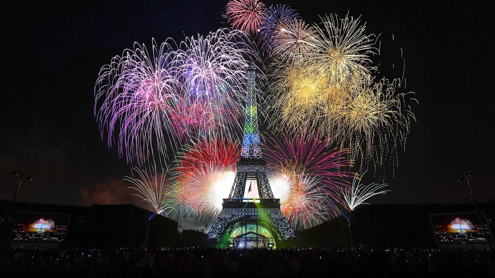
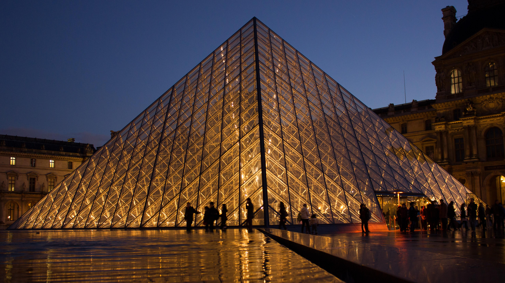
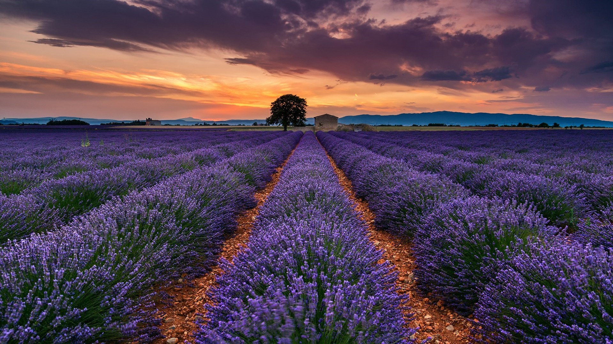
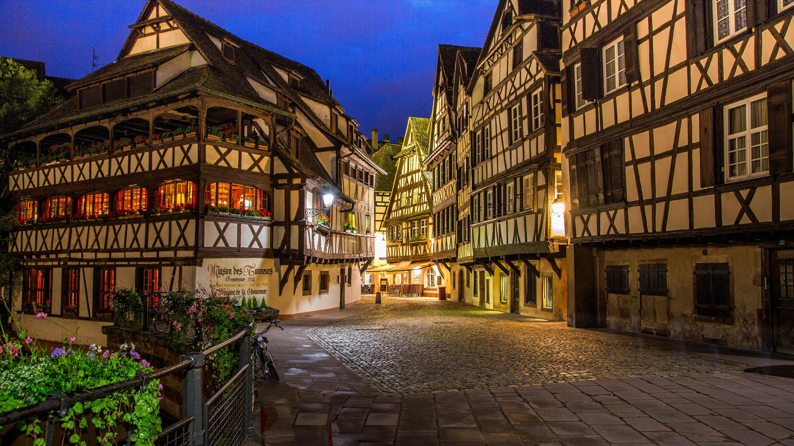

Paris is located in northern France, on both banks of the Seine River, 375 kilometers away from the mouth of the river (English Channel). The city center coordinates are 48°52′N and 2°25′E. The Seine winds through the city, forming two river islands. The metropolitan area of Paris, the Île-de-France, includes Haute-Seine, Val-de-Marne, and Seine-Saint-Denis, which are distributed around the walls of Paris and are composed of urban areas connected to Paris. Little Paris is downtown Paris. The area of Little Paris is about 105.4 square kilometers, and the metropolitan area of Greater Paris is about 12,000 square kilometers.
Paris lies on the Central Plateau in the south, the Lorraine Plateau in the east, the Ardennes to the north, and the hills of Amoricán in the west. Paris is located in the center of the Paris Basin, with a low and flat terrain, with an average elevation of about 178 meters.
The city itself occupies the center of the Paris Basin. It has a mild oceanic climate with no intense heat in summer and no severe cold in winter. The average temperature in January is 3℃, the average temperature in July is 18℃, and the average annual temperature is 10℃. The annual rainfall is evenly distributed, with a little more in summer and autumn, with an average annual rainfall of 619 mm.
The Seine is the main river in Paris. The total length of the river is 776.6 kilometers, and the total drainage area including its tributaries is 78,700 square kilometers. The transportation volume of its drainage network accounts for most of the navigation volume of rivers in Paris.
The Seine River is an important source of water for residents along the banks of Paris. Large power plants, whether thermal power plants or nuclear power plants, draw cooling water from Hanoi. About half of the water used in the area around Paris, including industrial and residential water, is taken from the Seine, and three-quarters of the water used in the area between Rouen and Le Havre is also taken from the Seine.
Paris is very rich in plant resources. The land for agriculture and urban development only accounts for about 2% of the area of Paris, and the remaining 98% is still covered by green vegetation. The average annual timber harvesting volume in Paris is about 2,000 square kilometers, and the annual forest area that is cut down accounts for about 0.33% of the forest area.
There are grizzly bears, elk, moose, reindeer, marmots, geese and mice in Paris.
Paris has metal minerals such as copper, nickel, gold, silver, platinum, cobalt, zinc and diamonds, and non-metallic minerals such as salt, gypsum, lime, sand and gravel.
French snail: an edible snail. This dish is generally seasoned with garlic and butter. Since the snails are shelled, a special fork is used to remove the meat when serving.
French offal: In this dish, the beef is usually boiled in the original broth over a Chinese fire, then the meat is cut into pieces, covered with flour, and then slightly fried. Generally, lemon and pickled thorny mountain fruit flower buds are added when frying.
 